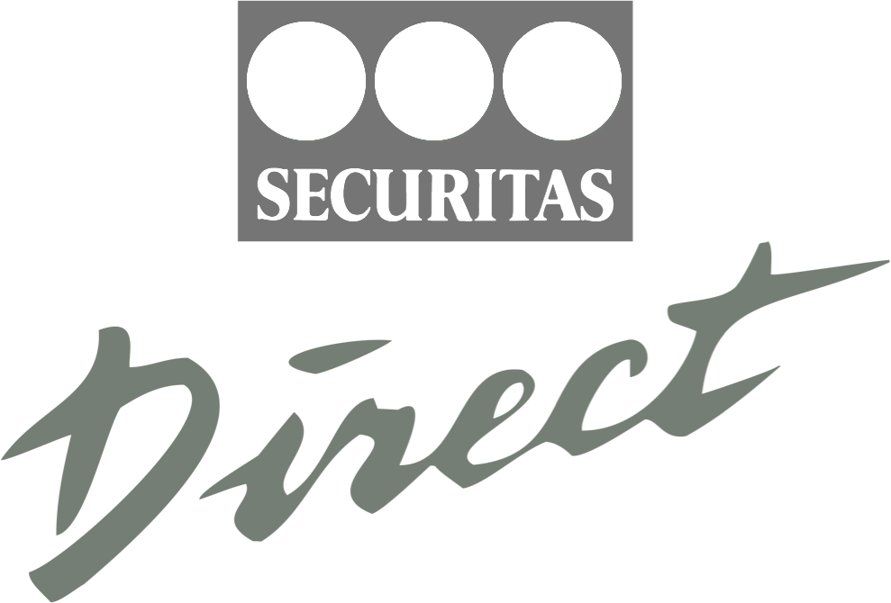
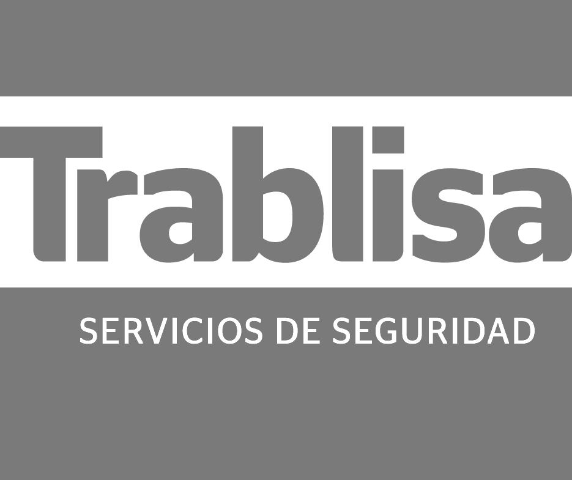

<!doctype html><html lang="es"><head><title>Panoptico - Home</title><meta charset="utf-8"><meta name="viewport" content="width=device-width"><meta name="title" content="Panoptico"><meta name="description" content="Panoptico"><link rel="stylesheet" href="css/style.css?v=2"><meta name="viewport" content="width=device-width,initial-scale=1,shrink-to-fit=no"><link rel="shortcut icon" href="img/metaicons/favico.ico" type="image/x-icon"><link rel="icon" href="img/metaicons/icon32.png" sizes="32x32" type="image/png"><link rel="icon" href="img/metaicons/icon96.png" sizes="96x96" type="image/png"><link rel="icon" href="img/metaicons/icon256.png" sizes="256x256" type="image/png"><link rel="apple-touch-icon-precomposed" href="img/metaicons/icon152.png" type="image/png" sizes="152x152"><link rel="apple-touch-icon-precomposed" href="img/metaicons/icon152.png" type="image/png" sizes="120x120"><script>!function(e,t,a,n){e[n]=e[n]||[],e[n].push({"gtm.start":(new Date).getTime(),event:"gtm.js"});n=t.getElementsByTagName(a)[0],a=t.createElement(a);a.async=!0,a.src="https://www.googletagmanager.com/gtm.js?id=GTM-T95QDXW",n.parentNode.insertBefore(a,n)}(window,document,"script","dataLayer")</script></head></html><body><noscript><iframe src="https://www.googletagmanager.com/ns.html?id=GTM-T95QDXW" height="0" width="0" style="display:none;visibility:hidden"></iframe></noscript><div class="wrapper"><header><div class="header__logo"><a href="index.html"></a></div><div class="header__links"><ul class="header__links__list"><li><a class="wmenu" href="javascript:void(0)">Soluciones</a><div class="menu"><ul><li><a href="fabricantes.html"><div class="menu__info"><span>Fabricantes</span><span class="desc">La herramienta que incrementa su portfolio de servicios, creando recurrencia de ventas.</span></div></a></li><li><a href="integradores.html"><div class="menu__info"><span>Integradores</span><span class="desc">La soluci&oacute;n de gesti&oacute;n centralizada que le proporciona una ventaja competitiva.</span></div></a></li></ul></div></li><li><a class="wmenu" href="javascript:void(0)">Productos</a><div class="menu"><ul><li><a href="guardian.html"><div class="menu__info"><span>Panoptico Guardian</span><span class="desc">El futuro de las pruebas judiciales de audio/video en defensa de los m&aacute;s vulnerables.</span></div></a></li></ul></div></li><li><a class="no-menu" href="contacto.html">Contacto</a></li></ul></div></header><div class="header__menu"><span></span></div><div class="overlay"></div><div class="header__menu__content"><ul><li><a href="index.html">P&aacute;gina principal</a></li><li><span>Soluciones</span></li><li><a class="sub" href="fabricantes.html">Fabricantes</a></li><li><a class="sub" href="integradores.html">Integradores</a></li><li><span>Productos</span></li><li><a class="sub" href="guardian.html">Guardian</a></li><li class="section"><a class="closeMenu" href="contacto.html">Contacto</a></li></ul></div><div class="hero"><div class="hero__content"><div class="hero__content__text"><h1>La <span>soluci&oacute;n de videovigilancia</span> en nube que se adapta a su negocio</h1><p>El software de videovigilancia que <strong>integra todos sus sistemas</strong> de intrusión y gestiona alarmas desde cualquier lugar. Ahorre costes con una <strong>solución multicloud</strong> que no requiere de infraestructura propia ni dispositivo presencial y que está 100% APIficada.</p><a class="button" href="contacto.html" id="index_cta_cabecera">Solicite una demo gratuita</a></div><div class="image__mobile"><div class="image__mobile__bg"><div class="image__mobile__header"><span>C&aacute;mara</span></div><div><div class="image__mobile__task"><span>Nueva alarma</span></div><div class="image__mobile__task"><span>3 grabaciones</span></div></div><div class="image__mobile__footer"></div></div><div class="image__mobile__thumb"></div></div><div class="image__web"><div class="image__web__bg"><div class="image__web__header"></div><div class="image__web__title">C&aacute;mara</div><div class="image__web__content"><div class="image__web__thumb"></div></div></div></div><div class="scrollpeak"></div></div><div class="separator"></div></div><div class="logos"><div class="separator"></div></div><div class="tool"><h2>La herramienta definitiva de videovigilancia</h2><h5>Descubra los servicios que ofrece Panoptico para su empresa.</h5><div class="tool__content"><div class="tool__content__menu"><div class="tool__content__desc"><div class="tool__image image__online"><div class="image__online__content"><div class="image__online__cam" id="camActual"><div class="camImg"></div></div><div class="image__online__controls controls_h"><div class="controls__option active" id="camLeft"></div><div class="controls__option" id="camRight"></div></div><div class="image__online__controls controls_v"><div class="controls__option active" id="camUp"></div><div class="controls__option" id="camDown"></div></div><div class="image__online__controls controls_z"><div class="controls__option" id="camZoomOut"></div><div class="controls__option" id="camZoomIn"></div></div></div></div><h3>Gesti&oacute;n y visualizaci&oacute;n de contenido en directo</h3><p>Monitorice su dispositivo en alta resoluci&oacute;n desde cualquier lugar gracias a su control remoto y audio bidireccional.</p></div><div class="tool__content__desc"><div class="tool__image image__autoinstall"><div class="image__autoinstall__content"><div class="image__autoinstall__qr"></div></div></div><h3>Autoinstalaci&oacute;n de dispositivos</h3><p>Integre dispositivos de diferentes marcas manualmente o de forma autom&aacute;tica.</p></div><div class="tool__content__desc"><div class="tool__image image__cloud"><div class="image__cloud__content"><div class="image__cloud__cam"><div class="image__cloud__playbutton"></div></div><div class="image__cloud__timeline"><div class="image__cloud__alert"></div><div class="image__cloud__alert"></div><div class="image__cloud__alert"></div></div></div></div><h3>Videograbaci&oacute;n en la nube</h3><p>Panoptico le permite almacenar video en la nube o mediante el despliegue on premise en servidores privados.</p></div><div class="tool__content__desc"><div class="tool__image image__alerts"><div class="image__alerts__alert"><div class="image__alert__icon"></div><div class="image__alert__copy"><span>Alarma lanzada manualmente</span><p>12:54 29/10/2021</p></div></div><div class="image__alerts__alert"><div class="image__alert__icon"></div><div class="image__alert__copy"><span>Alarma lanzada manualmente</span><p>13:21 28/10/2021</p></div></div><div class="image__alerts__alert"><div class="image__alert__icon"></div><div class="image__alert__copy"><span>Alarma lanzada manualmente</span><p>09:32 26/10/2021</p></div></div></div><h3>Servicio de gesti&oacute;n de alarmas</h3><p>Grabe y gestione alertas basadas en sensores software y/o hardware de movimiento que le notificar&aacute;n de incidencias.</p></div><div class="tool__content__paddleleft hidden" id="paddleLeft"></div><div class="tool__content__paddleright" id="paddleRight"></div></div></div><div class="separator"></div></div><div class="tech"><div class="tech__content"><div class="tech__content__title"><h2>Infraestructura flexible y personalizaci&oacute;n de la plataforma</h2><p>Panoptico es 100% personalizable.</p><a class="button" href="contacto.html" id="index_cta_tech">Solicite una demo</a></div><div class="tech__content__grid"><div class="tech__content__grid__box"><h4>Integraci&oacute;n de la marca de empresa</h4><p>Personalice la interfaz para sus usuarios con su identidad visual.</p></div><div class="tech__content__grid__box"><h4>Integraci&oacute;n con software de terceros</h4><p>A&ntilde;ada a programas de gesti&oacute;n de CRAs como Manitou o Mastermind la potencia integradora de Panoptico.</p></div><div class="tech__content__grid__box"><h4>Sistema multicloud</h4><p>Posibilidad de usar el proveedor de almacenamiento propio o en nube, que encaje con sus necesidades con un simple cambio de c&oacute;digo. Toda la comunicaci&oacute;n siempre viaja de forma segura.</p></div><div class="tech__content__grid__box"><h4>Plataforma APIficada</h4><p>Se da la posibilidad de usar los servicios REST para adecuarse a instalaciones que as&iacute; lo demanden.</p></div></div></div><div class="tech__api" id="techapi"><div class="tech__code"><p><strong>await</strong> <span class="grape">fetch</span>('<span class="yellow">api/devices/10/alerts</span>', {</p><p class="level__1"><span class="red">method</span>: 'POST',</p><p class="level__1"><span class="red">mode</span>: 'cors',</p><p class="level__1"><span class="red">body</span>: '{}',</p><p class="level__1"><span class="red">headers</span>: {</p><p class="level__2">'Content-Type': '<span class="green">application/json</span>',</p><p class="level__2">Accept: '<span class="green">application/json, text/plain, */*</span>',</p><p class="level__2">Authorization: '<span class="green">Bearer eyJhbGciOiJIUzI...</span>'</p><p class="level__1">}</p><p>});</p></div><div class="tech__result"><div class="tech__result__bg"><div class="tech__alarm"><div class="tech__alarm__icon"></div><div class="tech__copy"><h5>Alarma lanzada manualmente</h5><p>17:54 29/09/2021</p></div></div><div class="tech__alarm"><div class="tech__alarm__icon"></div><div class="tech__copy"><h5>Alarma lanzada manualmente</h5><p>14:12 29/09/2021</p></div></div></div><div class="loader"></div></div></div><div class="separator"></div></div><div class="press" id="press"><h2>Hablan de Panoptico</h2><div class="press__content"><div class="press__content__box"><p>El proyecto Panoptico se ha dado a conocer por su aplicaci&oacute;n de blockchain en la detenci&oacute;n de la violencia por medio de su grabaci&oacute;n y registro.</p><span>ABC Nacional</span></div><div class="press__content__box"><p>Panoptico Guardian, de C&oacute;rdoba: con tecnolog&iacute;a ubicada en la nube (cloud), registra, denuncia y gestiona online los delitos, con validez legal. Y, gracias a un sistema de audio y video, permite realizar la entrega a las autoridades competentes.</p><span>Cointelegraph</span></div><div class="press__content__box"><p>Panoptico Guardian ha sido uno de los ganadores del premio BlockchAngelChallenge, y uno de los mejores valorados por el jurado gracias a su sistema de videovigilancia con denuncia y registro de delitos como evidencia legal ante casos de violencia dom&eacute;stica.</p><span>Fundaci&oacute;n Everis</span></div></div><div class="separator"></div></div><div class="contactcta"><div class="contactcta__content"><h5>&iquest;Quiere empezar?</h5><p>Contacte con nosotros para obtener una demo gratuita de Panoptico.</p><a href="contacto.html" id="index_cta_contacto">Solicite una demo gratuita</a></div></div><footer><div class="footer__content"><div class="footer__content__box"><a href="index.html"></a><span>Un producto de <a href="https://nosolosoftware.es" target="_blank">NoSoloSoftware</a></span></div><div class="footer__content__box"><h6>Soluciones</h6><ul><li><a href="fabricantes.html">Fabricantes</a></li><li><a href="integradores.html">Integradores</a></li></ul></div><div class="footer__content__box"><h6>Productos</h6><ul><li><a href="guardian.html">Guardian</a></li></ul></div><div class="footer__content__box"><h6>Soporte</h6><ul><li><a class="message" href="contacto.html">Contacto</a></li><li><a href="faqs.html">Preguntas frecuentes (FAQs)</a></li></ul></div><div class="footer__content__box"><h6>Legal</h6><ul><li><a href="cookies.html">Pol&iacute;tica de cookies</a></li><li><a href="avisolegal.html">Aviso legal y pol&iacute;tica de privacidad</a></li></ul></div></div><div class="footer__separator"></div></footer></div><script type="text/javascript" src="js/app-dist.js?v=2"></script></body>